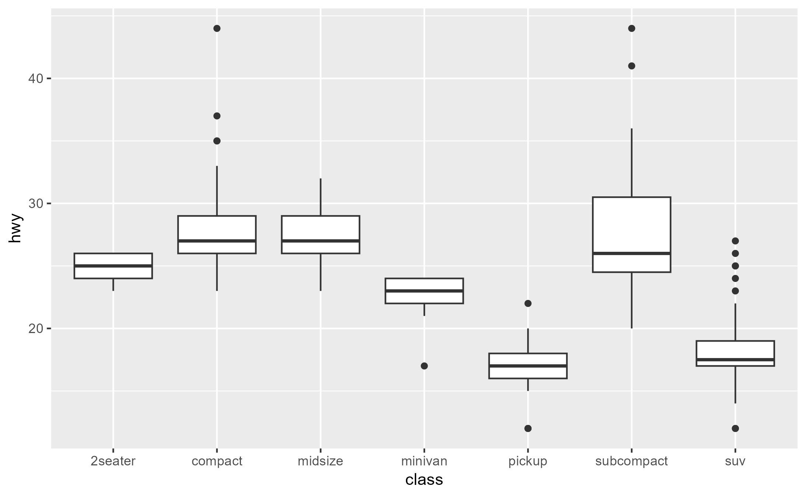

global_ggtrace() is a list of trace dumps collected across multiple traces, and is recommended
for use with ggtrace(once = FALSE) when you expect a trace to be independently triggered multiple
times (for example, when you are tracing a (compute/draw)_group method and there are multiple groups, or
when the plot has multiple layers which all call the method being traced).
Usage
global_ggtrace()
set_global_ggtrace(value)
clear_global_ggtrace()
global_ggtrace_state(state)
global_ggtrace_on()
global_ggtrace_off()Arguments
- state
If missing, returns whether the global tracedump is currently active. The global tracedump is inactive by default (
stateisFALSE). If activated, every time a trace created byggtrace()is triggered its tracedump is added to the global tracedump storage, which can be inspected withglobal_ggtrace().The global tracedump can be turned on/off by setting
statetoTRUE/FALSE.
Value
List
A logical indicating the current state of the global trace dump.
If state is provided, changes the state first, then returns the state invisibly.
Details
clear_global_ggtrace()sets the value ofglobal_ggtrace()toNULLand returnsNULL.You can inspect the state of the global trace dump with
global_ggtrace_state()and activate or deactivate it withglobal_ggtrace_on()andglobal_ggtrace_off(), which are aliases ofglobal_ggtrace_state(TRUE)andglobal_ggtrace_state(FALSE), respectively.
Note
When a trace dump is pushed to global_ggtrace(), it gets named after the ggproto method
and a hex code identifying the method's runtime environment, e.g. "Stat$compute_layer-00000267437FD3D8".
Examples
library(ggplot2)
global_ggtrace_state() # global tracedump is inactive by default since v0.4.3
#> [1] FALSE
global_ggtrace_on() # alias for global_ggtrace_state(TRUE)
#> Global tracedump activated.
clear_global_ggtrace()
#> Global tracedump cleared.
ggtrace(
GeomBoxplot$draw_group,
trace_steps = -1,
once = FALSE,
verbose = FALSE
)
#> `GeomBoxplot$draw_group` now being traced.
#> Creating a persistent trace. Remember to `gguntrace(GeomBoxplot$draw_group)`!
ggplot(mpg, aes(class, hwy)) + geom_boxplot()
#> Triggering persistent trace on `GeomBoxplot$draw_group`
#> Triggering persistent trace on `GeomBoxplot$draw_group`
#> Triggering persistent trace on `GeomBoxplot$draw_group`
#> Triggering persistent trace on `GeomBoxplot$draw_group`
#> Triggering persistent trace on `GeomBoxplot$draw_group`
#> Triggering persistent trace on `GeomBoxplot$draw_group`
#> Triggering persistent trace on `GeomBoxplot$draw_group`

gguntrace(GeomBoxplot$draw_group)
#> `GeomBoxplot$draw_group` no longer being traced.
boxplot_group_tracedump <- global_ggtrace()
length(boxplot_group_tracedump)
#> [1] 7
boxplot_group_tracedump <- unlist(
boxplot_group_tracedump,
recursive = FALSE,
use.names = FALSE
)
patchwork::wrap_plots(boxplot_group_tracedump, nrow = 1)
clear_global_ggtrace()
#> Global tracedump cleared.
global_ggtrace()
#> NULL
global_ggtrace_off() # alias for global_ggtrace_state(FALSE)
#> Global tracedump deactivated.